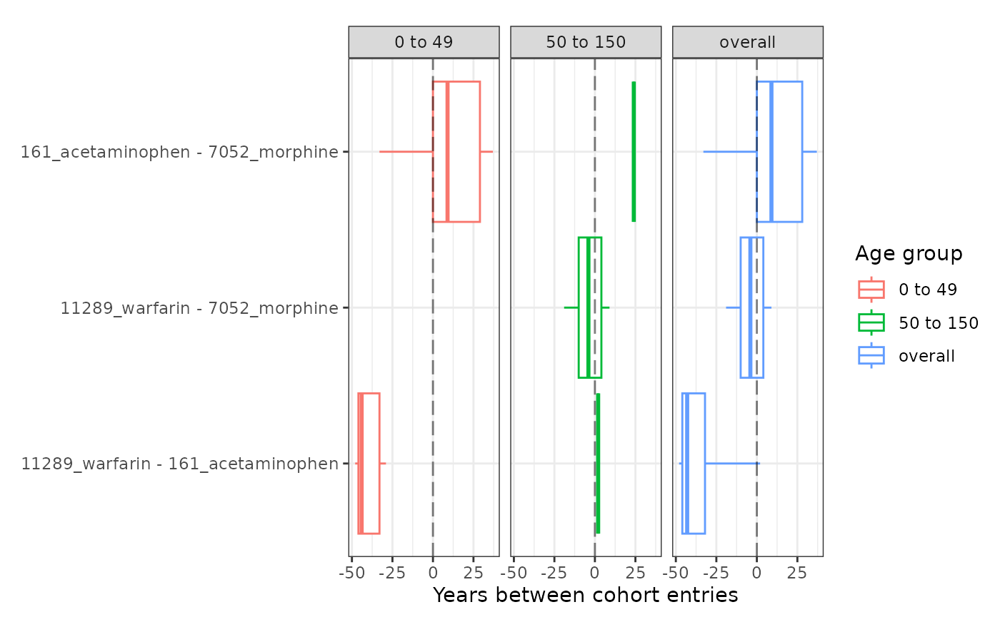

We saw in the previous vignette how we can summarise the overlap
between cohorts. In addition to this, we might also be interested in
timings between cohorts. That is, the time between an individual
entering one cohort and another. For this we can use the
summariseCohortTiming(). In this example we’ll look at the
time between entering cohorts for acetaminophen, morphine, and oxycodone
using the Eunomia data.
library(omock)
library(CDMConnector)
library(dplyr, warn.conflicts = FALSE)
library(CodelistGenerator)
library(PatientProfiles)
library(CohortCharacteristics)
cdm <- mockCdmFromDataset(datasetName = "GiBleed", source = "duckdb")
medsCs <- getDrugIngredientCodes(
cdm = cdm,
name = c(
"acetaminophen",
"morphine",
"warfarin"
)
)
cdm <- generateConceptCohortSet(
cdm = cdm,
name = "meds",
conceptSet = medsCs,
end = "event_end_date",
limit = "all",
overwrite = TRUE
)
settings(cdm$meds)
#> # A tibble: 3 × 6
#> cohort_definition_id cohort_name limit prior_observation future_observation
#> <int> <chr> <chr> <dbl> <dbl>
#> 1 1 11289_warfarin all 0 0
#> 2 2 161_acetamino… all 0 0
#> 3 3 7052_morphine all 0 0
#> # ℹ 1 more variable: end <chr>
cohortCount(cdm$meds)
#> # A tibble: 3 × 3
#> cohort_definition_id number_records number_subjects
#> <int> <int> <int>
#> 1 1 137 137
#> 2 2 13908 2679
#> 3 3 35 35Now we have our cohorts we can summarise the timing between cohort entry. Note setting restrictToFirstEntry to TRUE will mean that we only consider timing between an individual’s first record in each cohort (i.e. their first exposure to each of the medications).
medsTiming <- cdm$meds |>
summariseCohortTiming(restrictToFirstEntry = TRUE)
medsTiming |>
glimpse()
#> Rows: 6,186
#> Columns: 13
#> $ result_id <int> 1, 1, 1, 1, 1, 1, 1, 1, 1, 1, 1, 1, 1, 1, 1, 1, 1, 1,…
#> $ cdm_name <chr> "GiBleed", "GiBleed", "GiBleed", "GiBleed", "GiBleed"…
#> $ group_name <chr> "cohort_name_reference &&& cohort_name_comparator", "…
#> $ group_level <chr> "11289_warfarin &&& 161_acetaminophen", "11289_warfar…
#> $ strata_name <chr> "overall", "overall", "overall", "overall", "overall"…
#> $ strata_level <chr> "overall", "overall", "overall", "overall", "overall"…
#> $ variable_name <chr> "number records", "number subjects", "days_between_co…
#> $ variable_level <chr> NA, NA, NA, NA, NA, NA, NA, "density_001", "density_0…
#> $ estimate_name <chr> "count", "count", "min", "q25", "median", "q75", "max…
#> $ estimate_type <chr> "integer", "integer", "integer", "integer", "integer"…
#> $ estimate_value <chr> "136", "136", "-33784", "-24462", "-19709", "-16926",…
#> $ additional_name <chr> "overall", "overall", "overall", "overall", "overall"…
#> $ additional_level <chr> "overall", "overall", "overall", "overall", "overall"…As with cohort overlap, we have table and plotting functions to help view our results.
tableCohortTiming(medsTiming, timeScale = "years", uniqueCombinations = FALSE)| Cohort name reference | Cohort name comparator | Variable name | Estimate name | Estimate value |
|---|---|---|---|---|
| GiBleed | ||||
| 11289_warfarin | 161_acetaminophen | number records | N | 136 |
| number subjects | N | 136 | ||
| years_between_cohort_entries | Median [Q25 - Q75] | -53.96 [-66.97 - -46.34] | ||
| Range | -92.50 to 3.03 | |||
| 7052_morphine | number records | N | 6 | |
| number subjects | N | 6 | ||
| years_between_cohort_entries | Median [Q25 - Q75] | -4.54 [-10.36 - 4.76] | ||
| Range | -18.99 to 9.24 | |||
| 161_acetaminophen | 11289_warfarin | number records | N | 136 |
| number subjects | N | 136 | ||
| years_between_cohort_entries | Median [Q25 - Q75] | 53.96 [46.34 - 66.97] | ||
| Range | -3.03 to 92.50 | |||
| 7052_morphine | number records | N | 35 | |
| number subjects | N | 35 | ||
| years_between_cohort_entries | Median [Q25 - Q75] | 15.79 [5.02 - 33.51] | ||
| Range | -33.72 to 77.29 | |||
| 7052_morphine | 11289_warfarin | number records | N | 6 |
| number subjects | N | 6 | ||
| years_between_cohort_entries | Median [Q25 - Q75] | 4.54 [-4.76 - 10.36] | ||
| Range | -9.24 to 18.99 | |||
| 161_acetaminophen | number records | N | 35 | |
| number subjects | N | 35 | ||
| years_between_cohort_entries | Median [Q25 - Q75] | -15.79 [-33.51 - -5.02] | ||
| Range | -77.29 to 33.72 | |||
plotCohortTiming(
medsTiming,
plotType = "boxplot",
timeScale = "years",
uniqueCombinations = FALSE
)
If we want to see an even more granular summary of cohort timings we can make a density plot instead of a box plot. Note, for this we’ll need to set density to include ‘density’ as one of the estimates.
plotCohortTiming(
medsTiming,
plotType = "densityplot",
timeScale = "years",
uniqueCombinations = FALSE
)
As well as generating these estimates for cohorts overall, we can also obtain stratified estimates.
cdm$meds <- cdm$meds |>
addAge(ageGroup = list(c(0, 49), c(50, 150))) |>
compute(temporary = FALSE, name = "meds") |>
newCohortTable()
medsTiming <- cdm$meds |>
summariseCohortTiming(
restrictToFirstEntry = TRUE,
strata = list("age_group"),
density = TRUE
)
tableCohortTiming(medsTiming, timeScale = "years")| Cohort name reference | Cohort name comparator | Variable name | Estimate name |
Age group
|
||
|---|---|---|---|---|---|---|
| overall | 0 to 49 | 50 to 150 | ||||
| GiBleed | ||||||
| 11289_warfarin | 161_acetaminophen | number records | N | 9 | 8 | 1 |
| number subjects | N | 9 | 8 | 1 | ||
| years_between_cohort_entries | Median [Q25 - Q75] | -43.77 [-46.35 - -32.09] | -44.88 [-46.44 - -33.29] | 2.12 [2.12 - 2.12] | ||
| Range | -48.89 to 2.12 | -48.89 to -29.03 | 2.12 to 2.12 | |||
| 7052_morphine | number records | N | 6 | – | 6 | |
| number subjects | N | 6 | – | 6 | ||
| years_between_cohort_entries | Median [Q25 - Q75] | -4.54 [-10.36 - 4.76] | – | -4.54 [-10.36 - 4.76] | ||
| Range | -18.99 to 9.24 | – | -18.99 to 9.24 | |||
| 161_acetaminophen | 7052_morphine | number records | N | 26 | 25 | 1 |
| number subjects | N | 26 | 25 | 1 | ||
| years_between_cohort_entries | Median [Q25 - Q75] | 9.55 [0.85 - 28.56] | 9.05 [0.41 - 29.90] | 24.44 [24.44 - 24.44] | ||
| Range | -33.72 to 37.08 | -33.72 to 37.08 | 24.44 to 24.44 | |||
plotCohortTiming(medsTiming,
plotType = "boxplot",
timeScale = "years",
facet = "age_group",
colour = "age_group",
uniqueCombinations = TRUE
)